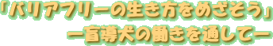

向山小学校では、地域の人々と協力して福祉について学び、「支え合う子」の育成に努めています。
| １学年 | まわしてあそぼう （→幼稚園との連携） |
| ２学年 | おじいちゃん、おばあちゃん こんにちは |
| ３学年 | 地域を学ぶ、地域に学ぶ、地域で学ぶ 「干潟にすむ鳥たちの観察」を通して
|
| ４学年 | おはやしを覚えよう |
| ５学年 | 小さな友達と仲良しになろう （→幼稚園との連携） |
| ６学年 | 私の町のバリアフリー |
|
|
|
| おじいちゃん、おばあちゃんにいろいろ教えていただきました | ||

地元の盲導犬協会の方にきていただき、実際に盲導犬と一緒に歩いたり、アイマスクをして白杖を使って歩くなどの体験を行いました。
 |
 |
|
| 盲導犬のレシーダです | 盲導犬とのふれあい | |
 |
 |
|
| 盲導犬と歩く | 白杖と人を頼りに歩く |